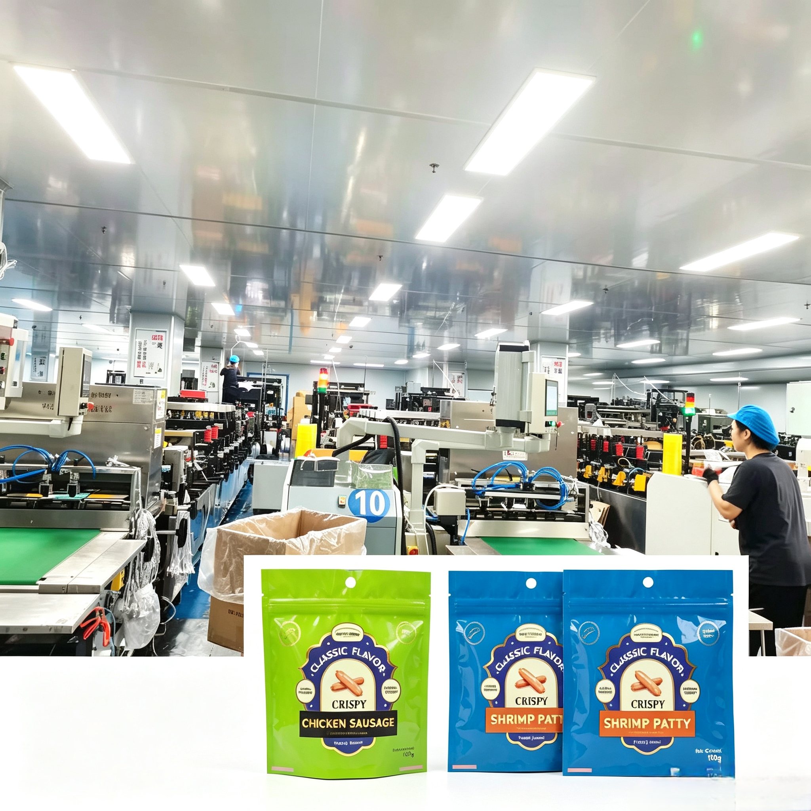

Focus on Custom Food Flexible Packaging, Composite Films Well Adapt to Southeast Asian Market Demands

Recently, our company keeps upgrading production technology of food-grade laminated packaging films. We provide customized services of high-barrier vacuum aluminized films, roll stocks and finished packaging bags for snack food industry in Southeast Asia.
With professional multi-layer lamination technology, we can freely combine materials like PET, VMPET, CPP and PE to match clients' existing packaging standards. Customized OTR and WVTR barrier performance is available to extend food shelf life, perfectly suitable for long-distance cross-border transportation and storage.
For bulk overseas orders, we guarantee stable production capacity and on-time delivery. We offer one-stop service including material selection, sample confirmation and mass production, helping clients cut purchasing costs while ensuring stable quality.
We will further expand the Southeast Asian market and improve complete food packaging solutions. By supplying cost-effective customized packaging products, we aim to help overseas clients reduce costs and achieve long-term win-win cooperation.